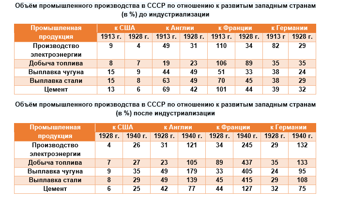
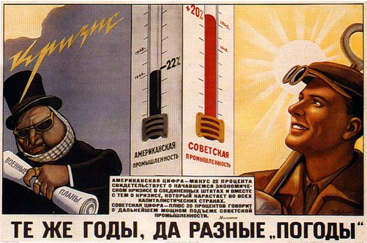
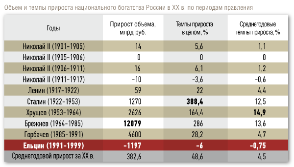
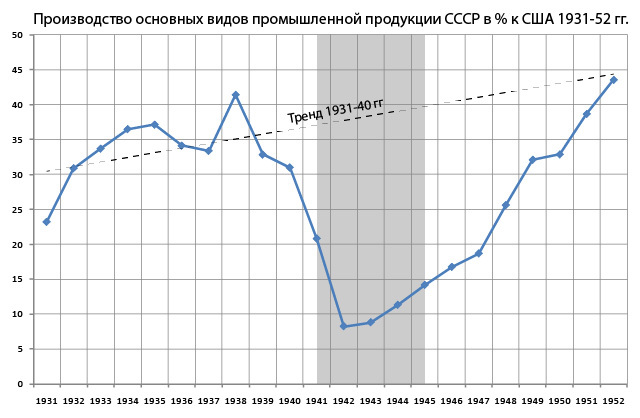
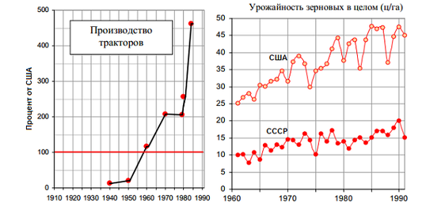
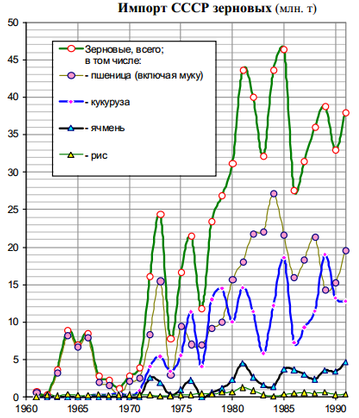
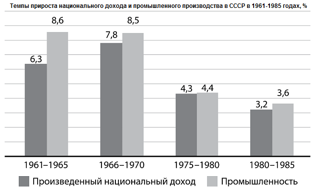

http://gnoom63.livejournal.com/10881.html
Gnoom63
СССР. Как была устроена советская экономика
За визуализацию ряда статистических данных отдельное спасибо burckina_faso
Знаете ли Вы, что в 30-40-е годы советское общество предложило миру социально-экономическую новацию, на основе которой уже 50 лет работает практически 85% западной экономики? А Вы в курсе, что именно эта советская новация обеспечила Западу победу над СССР в Холодной войне и научное и экономическое лидерство в современном мире? И кстати, Вы знаете, что руководство СССР отказалось от этой новации в 60-х годах?
При обсуждении советской экономики у большинства всплывают образы очередей, дефицита товаров, маразматиков у руля страны и «сжирающего» все бюджетные деньги ВПК. А если учитывать то, чем вся эта эпопея для СССР закончилась, многие априори считают плановую экономику неэффективной, а социалистический способ производства – бредовым. Кто-то тут же обращает внимание на Запад и не понимая, как реально устроена тамошняя экономика, твердит, что нам нужен рынок, частная собственность и прочие блага «цивилизованного» мира. Однако здесь есть некоторые очень интересные нюансы, о которых я и хочу Вам рассказать.
К сожалению, уместить все в один пост у меня не получилось, поэтому сначала предлагаю рассмотреть те базовые (и мало кому известные) экономические постулаты, на которых строилась эта самая новация «сталинской экономики» (1928-1958 гг.)
По традиции, некоторые выводы даю в самом начале:
• Нельзя рассматривать советскую экономику как единое целое. Хронологически и логически она делится на несколько этапов: а) военный коммунизм; б) НЭП; в) сталинская экономика; г) реформы Косыгина-Либермана; д) ускорение и перестройка.
• В основе сталинской экономики (помимо обобществления собственности и системной меры в виде труда) лежали закон вертикальной интеграции, обобществление добавленной стоимости и повышение благосостояния граждан.
• Главная цель социалистического способа производства – повышение благосостояния граждан. Капиталистического – максимизация прибыли в единицу времени.
• При социализме добавленная стоимость обобществляется. При капитализме – присваивается отдельными людьми или группами людей.
Советское экономическое чудо

Начать стоит с того, что советский период истории экономики нашей страны распадается на несколько этапов. И это были настолько различные этапы, что надо говорить не вообще о советской экономике, а о моделях экономики отдельных периодов. Данный факт очень важно понимать. Ведь у нас многие считают, что все, что было после НЭПа, - это продолжение сталинской индустриализации и коллективизации. А это в корне неверно, т.к. сталинская экономика - это только часть советской экономики. Также как частью советской экономики были ускорение и перестройка при Горбачеве. И ставить знак равенства между экономикой Сталина и экономикой Горбачева, как минимум опрометчиво.
Изначально (и не от хорошей жизни) большевикам пришлось пойти на прямое распределение продуктов без использования денег, что ознаменовало переход к политике военного коммунизма. Длился этот период с января 1918 по март 1921 года. Поскольку военный коммунизм не отвечал задачам хозяйственного строительства в мирных условиях, а Гражданская война шла к своему логическому завершению, с 14 марта 1921 года началась новая фаза, получившая название НЭП. Разбирать её, как и предыдущий этап, я не буду, а лишь обозначу, что НЭП фактически завершился к 1928 году.
Подробнее мы остановимся на следующей фазе – сталинской экономике, которая охватывает период с 1928 по 1958-е годы. Рассмотреть этот период подробно я хочу по нескольким причинам.
Во-первых, в общественном представлении он самый противоречивый. Кто-то бесконечно любит всемирно известного эффективного менеджера, не особенно вдаваясь в конкретику того, что же и как он все-таки сделал. Ну а кто-то сетует на «миллионы расстрелянных лично Сталиным», указывает на бесплатный труд «50 миллионов заключенных ГУЛАГа» и утверждает, что именно эта усатая сволочь (Газзаев) виновата во всех проблемах современной России, т.к. свернула НЭП.
Во-вторых… а впрочем, смотрите на таблицы.

Как мы видим к 1928 г., после ПМВ, Гражданской войны, интервенции Антанты и НЭПа, российская экономика отставала от экономик западных стран больше, чем в 1913 г. Предельно четко и ясно сложившуюся ситуацию охарактеризовал Йося в феврале 1931 г.: «Мы отстали от передовых стран на 50–100 лет. Мы должны пробежать это расстояние в десять лет. Либо мы сделаем это, либо нас сомнут».
В результате индустриализации в 1927–1940 гг. в стране было построено около 9000 новых заводов, общий объем промышленной продукции вырос в 8 раз, и по этому показателю СССР вышел на второе место в мире после США. В 1941 г. началась Великая Отечественная война, которую мы завершили в Берлине и… вышли на довоенный уровень производства к 1948 г., попутно кредитуя и отстраивая экономику будущих партнеров по ОВД (всю Восточную Европу). Напомню, что в ближайшие 10 лет мы помимо атомной бомбы, построили первую в мире АЭС, пяток ГЭС, взорвали водородную бомбу, запустили первый спутник, отгрохали более 600 предприятий в странах СЭВ, вырыли несколько каналов и так далее.

Повторюсь, после ВМВ мы вышли на довоенный уровень промпроизводства меньше, чем за 3 года. И это после почти 3-х лет жесточайшей оккупации. И без внешней помощи. Не знаю, у кого и как, а лично у меня всегда возникал вопрос, как нам это удалось? Если заложенная в 30-е и 40-е годы экономика была нежизнеспособна и неэффективна, как мы достигли таких показателей?
Предтеча вертикальной интеграции
В основе социалистической экономики, как мы знаем, лежит принцип обобществления средств производства. Плюс производственные отношения базируются на сотрудничестве и взаимной помощи (по крайней мере, так говорят). Об этом мы говорить не будем, т.к. тут много философии. А остановимся на том, что социалистическая экономика в т.ч. строится на основании закона вертикальной интеграции, согласно которому прибыль извлекается только из конечного продукта.
Вы спросите, что еще за закон такой? Приведу пример. У нас есть мебельное производство. Для того, чтобы собрать шкаф необходимо обработанное сырье (МДФ, стекло), фурнитура, сборка, доставка. В современной российской экономике всеми этими вещами обычно занимаются разные фирмы, которые никак друг с другом не связаны. Фирма Х поставляет стекло со свой наценкой в 10-15% (+ налоги), Фирма Х2 – МДФ с наценкой в 10-15% (+ налоги), Фирма Х3 – фурнитуру с наценкой (+ налоги) и т.д. В итоге себестоимость шкафа, который собирает и продает Фирма П, медленно, но верно растет. Ведь Фирме П приходится закупать все эти материалы, в которые уже заложили пару «концов».
Однако и это еще не все. Наш шкаф надо продать, и для этого он выставляется на подиуме в магазине, который принадлежит еще одной Фирме Г. Учитывая российскую специфику, магазин накручивает на шкаф еще 80-100%. В итоге, мы имеем шкаф ценой в 50 000 рублей при реальной себестоимости в 20 000 – 25 000 рублей. Для капиталистической экономики это нормальная ситуация, т.к. в ней каждое звено производства стремится извлечь максимальную прибыль в единицу времени.

Что мы имеем? Во-первых, у нас на конце цепочки сидит наглый дармоед, из-за которого цена шкафа удваивается. Он не прилагает никаких усилий. Он ничего не производит. Он тупо имеет сверхприбыль, из-за которой идет значительное удорожание продукции. Во-вторых, наша продукция становится неконкурентной по сравнению с, например, белорусской продукцией, где арендные ставки и зарплаты ниже, да и материалы дешевле. В-третьих, цена шкафа бьет по карману простых граждан и снижает их благосостояние. Ясное дело, что данная проблема касается не только шкафа, а всего и вся в нашей экономике.
А как данное производство могло бы быть организовано в вертикально-интегрированном комплексе? У нас бы так и остались все Фирмы Х, Х2, Х3 и т.д. Но они были бы объединены в рамках единого холдинга, в котором все промежуточные звенья передавали бы свою продукцию Фирме П по себестоимости. А Фирма П уже бы реализовывала свою продукцию с необходимой ей добавленной стоимостью. Никто бы не извлекал прибыль из промежуточного продукта и сырья. Вся прибыль шла бы от конечного продукта. Представляете, насколько бы увеличилась эффективность предприятия и экономики в целом?
Вы спросите, а на что тогда будут жить все фирмы в этой цепочке? Они же прибыль не извлекают. Все просто. Имея минимальные арендные ставки, которые перечисляются в пользу гос-ва, и дешевое сырье, добавленная стоимость от конечного продукта будет перераспределяться по всему холдингу.
Вы скажите, что прибыли может банально не хватить. Это не так. Поясню на простом примере. 1000 семян салата стоят 5 рублей. 75-80 % этих семян прорастут в здоровое растение, за которое в рознице можно будет выручить от 60 до 150 рублей. 1 семечко способно принести выручки в 12 000 раз больше, чем его себестоимость. Ощущаете разницу? Подумайте сами, что лучше для экономики страны – продать 100 тонн алюминия по 60 рублей за килограмм или сделать из него 1 Ил-78 за 3,5 миллиарда рублей? Где Вы заработаете больше?

Так что, куда более выгодно производить продукцию высоких переделов, чем торговать сырьем. Ведь её добавленная стоимость в десятки, а иногда и в сотни раз больше. Плюс при её создании запускается мультипликационный эффект. Ведь для постройки одного самолета работает порядка 90-100 смежных предприятий. А это рабочие места. И это – спрос на квалифицированные кадры, что неизбежно влечет за собой инвестирование в науку и образование.
Для лучшего понимания, что значит вертикальная интеграция для экономики, науки и обороноспособности государства приведу такой пример. В рыночной экономике есть виды деятельности, которые «архинерентабельны». К примеру, производство космических аппаратов. (Да и вообще космос сам по себе особых денег не приносит, если только Вы не спутники связи и навигации туда отправляете). Если предельно все упрощать, то его можно разделить на 3 части: 1-ую, 2-ую и 3-ью двигатели, ракеты-носители, орбитальные-корабли. По отдельности, как показала практика, выживают только двигатели.
НПО "Энергомаш" активно задвигает РД-180 и НК-33 всяким Локхидам с Мартинами и Боингам и за счет этого здорово живет. РКК "Энергия", которая разработала космические корабли Союз, Прогресс и Буран, плавно загибается, благо буржуям средства доставки не уперлись. Не лучше история и с ЦСКБ-Прогресс. Аналогии можно провести с нашей гражданской и военной авиацией. Та же самая песня была в 2008-2009 годах в Пикалево на цементных заводах. Зная итог, думаю вы сможете ответить на вопрос, насколько полноценна теория о санирующей функции рынка, благодаря которому отмирают «неэффективные» компании.
А будь это вертикально-интегрированный комплекс, то велика вероятность, что все было бы хорошо. Низкая рентабельность одних производств компенсировалась бы за счет синергии с другими, т.к. на конце цепочки был бы качественный продукт с высокой добавленной стоимостью. В итоге: у страны была бы полноценная космическая программа и новые производства; у науки - стимул к развитию; у людей - работа. Или Вы считаете, что космическая программа нам нахер не нужна?
Сделаю небольшую ремарку. В 30-50-е годы закон вертикальной интеграции еще не был претворен в жизнь целиком и полностью. У промежуточных цепочек еще была возможность получать минимальную прибыль (3-4%), да и вся добавленная стоимость сразу же присваивалась обществом. Более того, тогда и не существовало такого понятия, как вертикальная интеграция. Открытие и научное обоснование его сделал коллектив ученых во главе с профессором МГУ С.С. Губановым в 90-х годах, при изучении советской экономики того времени.
Ну а руководство СССР еще в 60-е годы решило отказаться от данного пути развития. Сначала мы разбили производственные цепочки, разрешив им извлекать максимальную прибыль на каждом переделе. Потом в 90-е взяли курс на полную децентрализацию с тотальной приватизацией. Т.е., во главу угла мы поставили не эффективность экономики страны в целом, а эффективность отдельных предприятий.
А знаете ли вы какую структуру имеют Самсунг, Циско, Мелкософт, Тойота, Фольксваген, Эппл, Дженерал Электрик, Шелл, Боинг и т.д? Знаете ли Вы чему обязаны сегодняшним экономическим лидерством США, Германия, Япония, КНР? В 1970 г. крупные западные вертикально интегрированные корпорации обладали 48,8% совокупного капитала, 51,9% - прибыли; в 2005 г. их доля поднялась, соответственно, до 83,2 и 86%. Сопоставима также их доля в экспорте, накоплениях, НИР и НИОКР, инновациях. Это и не удивительно, ведь они концентрируют в себе лучшие производственные, технологические, исследовательские и управленческие ресурсы. Безлимитные кредитные линии, лобби в правительствах.
В развитых странах полностью господствует экономика корпораций, а не малых предприятий, которые нам успешно навязывают. Все их крупнейшие компании функционируют на основе закона вертикальной-интеграции, на которой строилась сталинская экономика и от которой мы отказались.
Добавленная стоимость
Однако вернемся в сталинский СССР. Помимо закона вертикальной интеграции в СССР (и это очень важно) обобществлялась… добавленная стоимость. Да, добавленная стоимость – святая святых капитализма, ради которой он и существует, обобществлялась. Если в капиталистической экономике вся прибыль присваивалась отдельным капиталистом или их группой, а общество получало хрен по всей морде, то в СССР она обобществлялась и шла на снижение себестоимости продукции, капитальные инвестиции, бесплатные общественные блага (бесплатные медицина, образование, спорт, культура, компенсации авиа- жд- перевозок). Т.е., она шла на повышение благосостояния граждан. Ведь целью социалистической экономики является повышение благосостояния граждан, а не максимизация прибыли.
Как это работало? Вернемся к нашей мебельной фабрике. Профильное министерство совместно с отраслевыми комитетами и конкретными предприятиями формировало план, в котором определялся ряд целевых показателей (около 30), в т.ч. объем выпускаемой продукции и её цена. Дальше запускался производственный процесс.

Весь процесс ценообразования выглядел так. Предприятие-1 (П-1) продавало промежуточную продукцию (например, МДФ) Предприятию-2 (П-2) по цене, которая состояла из себестоимости + 3-4% прибыли П-1 (p1). Данную прибыль П-1 использовало для премирования сотрудников, оплаты их отпусков, улучшения их материального положения. Также с этой прибыли государство взимало налог.
П-2 после необходимых манипуляций с товаром (сделало шкаф из МДФ) отдавало его на реализацию через систему государственной торговли по цене p1 + себестоимость +3-4%. Эта цена называлась оптовой ценой предприятия (p2). Дальше на эту p2 государство накладывало так называемой налог с оборота. Налог с оборота – это и была та самая добавленная стоимость, которая присваивалась в пользу всего общества. Получалась оптовая цена промышленности (p3). Ну и сверху на эту цену накладывались 0,5-1%, из которых финансировалась деятельность системы государственной торговли. В итоге, р3 + 0,5-1% называлось розничной ценой.
Например, сделали мы холодильник. Его себестоимость + наша прибыль в 3% – 10 рублей. Государство наложило на него налог с оборота в 25 рублей + 50 копеек ушло на обеспечение системы торговли. Итого розничная цена холодильника – 35,5 рублей. И эти 25 рублей налога с оборота пошли не кому-то в карман, а всему обществу.
Т.о., хозяйственные ячейки получали минимум прибыли, которая шла на материальное поощрение работников ячейки. Основная же часть добавленной стоимости через налог с оборота обобществлялась и шла на бесплатное образование, жилье, медицину, спорт, отдых, компенсацию ж/д и авиаперевозок. А также на модернизацию основных фондов и средств производства, строительство новых предприятий и реализацию инфраструктурных проектов. Напомню, что станки, земля, здания и т.д. не принадлежали отдельным предприятиям, а были в собственности народа. Как видите, никаких личных самолетов, десятка личных авто, замков и элитных проституток. Все – людям.
Повышение благосостояния граждан
Так как целью социалистической экономики было увеличение благосостояния граждан, то в приоритете у гос-ва и предприятий было обеспечить людей всем необходимым. Сначала – это были работа и продукты питания. Далее – одежда и жилье. Потом – медицина, образование, бытовая техника. Систему интересовала не прибыль, а кол-во продукции.
Например, появились холодильники. Принято решение: включить холодильники в список предоставляемых населению товаров. Это означало, что размещались планы на разработку моделей холодильников и строительство заводов по их производству. На этапе освоения производства – вполне естественно – холодильников не хватало. Возникал дефицит. Но по мере развития производство выходило на плановый уровень и дефицит исчезал. Зато появлялся новый товар – телевизоры и цикл повторялся.

Однако благосостояние граждан повышалось не только за счет увеличения валовых показателей. Важную роль играло снижение себестоимости продукции. Например, шкаф имеет себестоимость в 10 000 рублей и оптовую цену предприятия в 10 500 рублей. Как увеличить прибыль предприятия при плановых ценах? Есть 2 пути: а) снизить себестоимость; б) увеличить количество произведенной продукции.
Т.е., если в первый год прибыль с одного шкафа составила 500 рублей, то, допустим, во второй год коллектив смог снизить себестоимость до 9000 рублей и произвел сверх плана еще несколько шкафов. В итоге, прибыль предприятия увеличилась минимум на 1500 рублей. Однако, чтобы коллектив предприятия не зажрался, государство ежегодно пересматривало цены в сторону их понижения. В итоге, продукция постепенно дешевела, а значит и уменьшались расходы граждан на её приобретение. Фактически, шла конкуренция за снижение себестоимости продукции и за внедрение методов повышения эффективности производства.
***
Главной целью сталинской экономики было улучшение благосостояния населения, которое состояло из: а) постоянного и планового снижения себестоимости продукции; б) расширение бесплатных общественных благ; в) уменьшения рабочего времени граждан. И данная цель достигалась путем повышения общей эффективности народного хозяйства, а не отдельных его предприятий.
Советская экономика вышла на довоенный уровень производства к 1948-1949 годам. Однако было очевидно, что бесконечно заниматься производством средств производства (категория А) невозможно. Более того, это противоречило самой идеи социализма. Ведь максимальное удовлетворение постоянно растущих материальных и культурных потребностей всего общества требовало производства товаров категории Б (потребительских товаров). Эту проблему необходимо было решать. Причем решать с учетом начала нового витка научно-технического прогресса. Все это требовало совершенствования работы социалистической экономики и смены приоритетов её развития.
Так как же изменилась советская экономика после смерти Сталина? Какие решения принимали советские руководители? И каким они видели будущее СССР?

И снова выводы:
• С 60-х годов экономика СССР целенаправленно уходила от плановой системы к бесплановой, что привело её сначала к капиталистическому хозрасчету, а затем и к полной дезорганизации.
• Социалистическая экономика (1928-1953) ставит во главу угла эффективность народного хозяйства всей страны. «Ревизионистская» экономика – эффективность отдельного предприятия.
• Ключевая причина развала СССР – рост неподконтрольной бюрократии и её стремление к сохранению и расширению своих привилегий.
Хрущев: МТС, целина, совхозы
Отправной точкой фундаментальных изменений социалистической структуры Советского Союза стал XX съезд партии 25 февраля 1956 года. На нем Хрущев оклеветал Сталина и основополагающие идеи социализма. Этот съезд – отправная точка для критики советского строя. Этот съезд – начало реставрации капитализма в СССР. Этот съезд – начало подрыва СССР изнутри. Этот съезд – до сих пор источник грязи для борьбы с идеями социализма и коммунизма, и просто для критики нашей страны.
Т.к. тема поста касается только экономики и производственных отношений, мы не будем рассматривать на конкретных примерах, как ХХ съезд повлиял на идеологию, внутрипартийную борьбу, внешнюю политику, отношение к политзаключенным и т.д., а сразу перейдем к инициативам Хрущева.
Основная деятельность Хрущева была сосредоточена на сельском хозяйстве. Причина: он считал себя большим специалистом в данном вопросе. Какие же решения принял наш агроном? Прежде всего, стоит сказать о реформе МТС (1957-1959 годы). МТС – это машинно-тракторные станции, которые обрабатывали землю и снимали урожай в колхозах.
При Сталине колхозы и совхозы не имели своей тяжелой техники: тракторов, комбайнов, жаток, автомобилей и т.д. И Сталин настаивал на том, что их ни в кое случае нельзя передавать колхозам. Вот что он писал в 1952 году: «... предлагая продажу МТС в собственность колхозам, т.т. Санина и Венжер делают шаг назад в сторону отсталости и пытаются повернуть назад колесо истории... Это значит вогнать в большие убытки и разорить колхозы, подорвать механизацию сельского хозяйства, снизить темпы колхозного производства». Подобный опыт имел место быть в начале 1930 года, когда по предложению группы ударников-колхозников им передавали в собственность технику. Однако первая же проверка показала нецелесообразность этого решения и уже в конце 1930 года решение было отменено.
Почему МТС нельзя передавать в собственность колхозам? Здесь можно привести несколько доводов. Во-первых, эффективное использование техники. Допустим, что среднему колхозу достаточно одного комбайна, чтобы успеть снять урожай. Но никакой колхоз не рискнет ограничиться одним комбайном, поскольку в случае его поломки ничего хорошего не произойдет. Урожай погибнет. А кому-то придется отвечать за срыв уборной. Поэтому такой колхоз купит для подстраховки 2 комбайна. Т.о., если сталинская МТС обслуживала 100 колхозов, то после передачи техники придется иметь в сумме 200 комбайнов. Сталинская же МТС при резерве в 10-15% могла иметь всего 110-115 комбайнов и справляться с уборкой урожая во всех 100 колхозах.
Что это значит? Формально у нас наметится небывалый рост производства тракторов. Все это найдет отражение в цифрах официальной статистики. Будут сделаны далеко идущие выводы о росте и эффективности всех и вся. Но по факту – это неэффективное расходование средств, которые могли бы пойти, например, на строительство школ и больниц. Плюс надо понимать, что Хрущев заставил колхозы МТС выкупить, а это не только серьезные единовременные затраты, но еще и статья в бюджете (технику ведь надо содержать и модернизировать). А как колхозам покрыть такие убытки? Только повышением цен на конечную продукцию.

Раньше государство могло ценами заставить МТС снижать затраты на обработку земли. Рост количества техники у МТС и неоправданный рост стоимости этой техники сказывался на затратах МТС и их прибыли. Увеличить они её могли лишь повысив свою эффективность и эффективность своей техники. Т.е., они были экономическим контролером заводов сельхозмашин: не давали тем производить неэффективную технику, а всей техники производить больше чем надо. А с ликвидацией МТС производство сельхозмашин в СССР начинало бессмысленно увеличиваться, увеличивая стоимость продуктов питания.
Второй и куда более важный момент – с передачей в собственность МТС колхоз фактически становится независимым производителем. Это нарушение одного из основополагающих принципов социалистической экономики. Ведь при таком сценарии колхозы становятся владельцами средств производства. Т.е. они попали бы в исключительное положение, какого не имело в стране ни одно предприятие. Это еще больше отдалило бы колхозную собственность от общенародной собственности и привело бы не к приближению к социализму, а наоборот, к удалению от него. Колхоз становился независимым производителем. А какая мотивация у независимого производителя? Только прибыль. И логично предположить, что такой колхоз начнет диктовать свои условия по ценам на продукцию и по её объему.
В письме Саниной и Венжеру Сталин указывал на то, что нужно постепенно выключать излишки колхозного производства из системы товарного обращения и включить их в систему продуктообмена между государственной промышленностью и колхозами. В итоге, все сделали наоборот.
Следующей инициативой Хрущева, выдвинутой в декабре 1958 года, стало урезание личных подсобных хозяйств. Формально практически все сельское население страны было объединено в коллективные хозяйства. Но на деле лишь 20% дохода крестьяне получают от работы в колхозе, а остальная прибыль приходит из «серого» сектора – от торговли неучтенной продукцией, произведенной колхозниками в личных подсобных хозяйствах, и ее продажи государственным заготовителям. В итоге, Хрущев обвинил Маленкова в сочувствии мелкобуржуазным тенденциям в сельском хозяйстве, добился его отстранения и провел еще одну реформу.

В чем логика данной реформы? В «Анти-Дюринге» Энгельс писал, что в ходе пролетарской революции все средства производства должны быть обобществлены. Это необходимо сделать, чтобы устранить товарное производство. В принципе, это правильное решение, но есть один нюанс. Энгельс, говоря о ликвидации товарного производства, имеет в виду такие страны, где капитализм и концентрация производства достаточно развиты не только в промышленности, но и в сельском хозяйстве. Такой страной, на момент написания «Анти-Дюринга», была лишь Великобритания.
Ничего подобного не было ни во Франции, ни в Голландии, ни в Германии. Да, капитализм в деревне развивался, но он был представлен классом мелких и средних производителей в деревне. Про нашу страну и говорить не приходится. Курс на «фермерские хозяйства» был взят только при Столыпине за пару лет до Первой Мировой Войны. Что было дальше вы и сами знаете.
В сентябре 1952 года в «Экономических проблемах социализма в СССР» Сталин писал: «Нельзя также считать ответом мнение других горе-марксистов, которые думают, что следовало бы, пожалуй, взять власть и пойти на экспроприацию мелких и средних производителей в деревне и обобществить их средства производства. На этот бессмысленный и преступный путь также не могут пойти марксисты, ибо такой путь подорвал бы всякую возможность победы пролетарской революции, отбросил бы крестьянство надолго в лагерь врагов пролетариата». Об этом же писал Ленин в своем кооперативном плане.
Интересны также данные, представленные в аналитической записке экономиста-аграрника Н.Я.Ицкова от апреля 1962 года. В ней указывается, что личные приусадебные хозяйства колхозников в конце 1959 года производили от 50 до 80% валовой продукции молока, мяса, картофеля и овощей, яиц колхозного сектора. Он утверждал, что государство не готово взять на себя снабжение населения, составляющее половину жителей страны. Почему Хрущев все это проигнорировал? Чем он руководствовался при проведении реформы?
Не была решена и зерновая проблема. Освоение целины противоречило решениям сентябрьского пленума 1953 года. Т.к. на нём принимались решения об интенсификации сельскохозяйственного производства, а распашка целины была экстенсивным методом ведения сельского хозяйства. Однако стоит признать, что среднегодовые сборы зерна за 1954-1958 годы все-таки выросли и составили 113,2 млн. тонн против 80,9 млн. в 1949-1953 годах. Продолжали они расти и в 60-е годы. Но на «освоение целины» накладывалась масса других решений (укрупнение колхозов, урезание подсобных хозяйств, паспортизация, передача МТС, волюнтаристские решения о том, что и где сажать), которые не позволили в полной мере решить зерновой вопрос. Ситуация усугубилась и ростом урбанизации: за период с 60 по 64 год в города переселилось почти 7 миллионов человек. В этой ситуации целина не только не укрепила зерновой баланс страны, но и привела (наряду с другими факторами) к снижению производства и необходимости закупок зерна за рубежом.
Ревизионистский переворот: реформа Косыгина-Либермана.
Волюнтаристские решения в аграрной сфере привели к тому, что в течение двух-трёх лет сельское хозяйство стало товарным. Себестоимость его резко выросла, что заставило в 1962 году впервые за послевоенные годы поднять цены на всю его продукцию. А в 1963 году кризис товарного сельскохозяйственного производства привёл к тому, что впервые после 1934 года СССР был вынужден начать закупки зерна за границей. Однако сельским хозяйством дело не ограничилось. Следующей «целью» реформаторов стала промышленность и система управления народным хозяйством.
Начало дестабилизации хозяйственных процессов в промышленности положила экономическая реформа 1957-1959 годов. Суть её можно свести к замене централизованной системы управления территориально распределенной системой. Ряд общесоюзных и союзно-республиканских отраслевых промышленных министерств были упразднены, их предприятия переданы в непосредственное подчинение совнархозов. Также была дестабилизирована функция планирования: перспективное планирование было передано Госэкономсовету, а текущее – Госплану.
Для лучшего понимания, что все это значило, поясню следующую вещь. Например, Вам надо провести автоматизацию всех рабочих мест в промышленности. Сделать Ваше производство капиталоемким и более эффективным. В масштабах экономики всей страны это даст колоссальный эффект: высвободится рабочая сила, можно будет сократить трудовой день при сохранении текущих зарплат, больше людей будут стремиться получить качественное образование, это будет стимулировать развитие науки и техники и т.д. Очевидно, что это работа не на один день. Для реализации всего этого Вам потребуется стратегия развития на 8-10 лет, а также возможность действовать в приказном порядке на благо всего народного хозяйства.
Подобная задача будет требовать вовлечения как капитала, так и труда большого количества предприятий. При этом предприятия не всегда заинтересованы в реализации таких инициатив. Причины могут самые разнообразные: нет капитала, нет кадров, нет времени, не заинтересованы и т.д. В итоге, перед Вам стоит дилемма: либо развитие экономики всей страны зависит от планов отдельных хозяйственных единиц (предприятий), либо развитие хозяйственных единиц будет согласовывать с интересами всей экономики.
В капиталистической системе (т.е., в современной экономике) все зависит от конкретных предприятий. Оно и понятно, т.к. в этой системе главным приоритетом является максимизация прибыли, а основной показатель – рост капитализации компаний. Благо отдельных компаний – это аксиома и священный закон. В советской системе до 1957 года в приоритете был рост благосостояния граждан, который был невозможен без развития всего народного хозяйства.
В 1957 году, внедряя систему совнархозов, Хрущев фактически поставил развитие экономики всей страны в зависимость от планов отдельных субъектов хозяйствования. Теперь планы спускались не от всесоюзных центральных министерств, а наоборот шли к ним. Фактически разработка плана стала начинаться на предприятиях, продолжаться в совете народного хозяйства и в Госплане конкретной республики и только потом она попадала в Госплан СССР. А к межотраслевым барьерам добавились и региональные.
Смог бы СССР разработать и воплотить в жизнь в 20-е годы план ГОЭЛРО, дожидайся он планов электрификации от каждого предприятия? Была бы проведена индустриализация, если бы руководство страны ждало бы планов от отдельных хозяйствующих субъектов? Как быстро была бы внедрена механизация сельского хозяйства, дожидайся СССР инициативы частников? Думаю, ответ очевиден.

Развитие экономики страны, рост благосостояния её граждан и научный прогресс возможны лишь при централизованном (гос-во, отраслевые и межотраслевые корпорации) накоплении и перераспределении ресурсов. Ни отдельное предприятие, ни отдельный совнархоз ничего подобного обеспечить не могут. Реформа 1957-1959 гг. увела планирование из области господства народнохозяйственных интересов в область господства интересов предприятий и интересов региональных элит.
Реформой 1957-1959 гг. был впервые поставлен вопрос о том, какие интересы будут господствовать в экономический политике государства – системы или элемента, целого или частного, народного хозяйства или отдельного предприятия. Окончательный ответ в пользу частного интереса был дан в 1965 году Косыгиным.
Косыгин прекрасно понимал, что страна успешно развивается только на бумаге. По факту, планы выполнялись лишь по «валу», а стоимость продукции росла, и качество её снижалось. Производители гнались за улучшением своих ведомственных показателей. Конечный потребитель и объемы реализованной продукции их мало интересовали.
В итоге решение было найдено – предприятия перевели на хозрасчет. Главными критериями эффективности предприятия стали показатели прибыли и рентабельности производства. Плановые показатели уменьшили с 30 до 9. Предприятиям позволили самим определять численность своих работников, оптовые цены, среднюю зарплату, привлекать для развития производства собственные средства и кредиты, создавать фонды материального поощрения. В общем, получилось типичное капиталистическое предприятие, но в социалистической системе.
Вновь невольно вспоминается Сталин: «Если взять рентабельность не с точки зрения отдельных предприятий или отраслей производства и не в разрезе одного года, а с точки зрения всего народного хозяйства и в разрезе, скажем, 10–15 лет, что было бы единственно правильным подходом к вопросу, то временная и непрочная рентабельность отдельных предприятий или отраслей производства не может идти ни в какое сравнение с той высшей формой прочной и постоянной рентабельности, которую дают нам действия закона планомерного развития народного хозяйства и планирование народного хозяйства, избавляя нас от периодических экономических кризисов, разрушающих народное хозяйство и наносящих обществу колоссальный материальный ущерб, и обеспечивая нам непрерывный рост народного хозяйства с его высокими темпами».
В результате же новой реформы во главу угла был поставлен краткосрочный интерес отдельных предприятий. А они были замотивированы лишь извлечением всеми возможными способами прибыли и увеличением фонда материального поощрения. Это неминуемо привело к инфляции, т.к. прибыль могла использоваться лишь для увеличения зарплаты. Зарплата росла, а товарное её обеспечение значительно отставало. Уже в середине 60-х стал формироваться «денежный навес», который обернется галопирующей инфляцией и деноминацией в 90-е.

Перевод предприятий на хозрасчет означал подчинение всего народного хозяйства интересам отдельных хозяйственных единиц. Мы откатились назад к 1921-1928 годам, когда в стране был НЭП, когда в промышленности и сельском хозяйстве действовал хозрасчет трестов и синдикатов. Т.е., «новаторская» реформа 1965-1967 годов по своей сути была возвратом к практике хозяйствования 30-летней давности.
Накрылась «медным тазом» и система снижения цен. В прошлый раз мы приводили пример со шкафом стоимостью в 10 000 рублей. В сталинской экономике, чтобы увеличить прибыль предприятия, необходимо было либо производить больше шкафов, либо снижать стоимость единицы продукции. «Косыгинская реформа» повернула все с ног на голову – теперь снижать себестоимость шкафа стало невыгодно. Ведь прибыль образовывалась как доля от себестоимости. Т.е., чем выше себестоимость, тем больше прибыль. 10% от 10 000 рублей – 1 000 рублей прибыли. А 10% от 15 000 рублей – 1 500 рублей прибыли. Значит, стремиться надо не к снижению, а к повышению себестоимости продукции. Любое снижение себестоимости – это удар по карману предприятия. Отсюда пошла, а затем и охватила всю экономику СССР, практика спекулятивного завышения цен и фальсификации продукции.

Хозрасчетные цены вырвались из-под контроля и государственного управления, они рушили управляемость и сбалансированность советской экономики, делали невозможным какое-либо планирование, искажали представления о приоритетах и перспективах развития страны, вели к наращиванию товарного дефицита и затруднениям на потребительском рынке. Экономика всей страны стала подчинена интересам краткосрочной прибыли, что неминуемо привело к её дезорганизации.
Но что еще важнее, был нанесен удар по демократии на производстве. Теперь абсолютно неважно, насколько ты компетентен. Неважно, какая у тебя производительность труда. Неважно, какие новшества ты можешь и готов привнести на производство. «Да всем насрать». Убив механизм снижения цен, пропала какая-либо мотивация работать лучше и больше. Пропала мотивация творить. Большинство стало заботиться о стабильной и спокойной работе с плановыми повышениями в должностях и окладах.
Зато стала появляться клановая замкнутость «красных директоров» и «бюрократии», заинтересованных в сохранении status quo. Они были той социальной базой, которая стояла за дальнейшую децентрализацию экономики, подчинение госплана договорам хозрасчетных предприятий, отмену налога с оборота и планового порядка изъятия прибыли предприятия в бюджет государства. Через 20-25 лет эти люди и их дети инициируют «ускорение» и «перестройку». А в 90-е станут сегодняшними олигархами, эффективными менеджерами и управленцами.
Последующие 15 лет до «ускорения» были ознаменованы нефтяным ралли. После войны Судного дня цены на углеводороды резко взлетели вверх. Это способствовало еще большей стагнации советской экономики. Рост нефтяных доходов скрывал реальные проблемы почти 15 лет. Однако в 80-е цены рухнули, а вместе с ними через несколько лет доломали и Советский Союз.
***
Начиная с 60-х годов в СССР полным ходом шла реставрация капитализма. «Реформаторы» смогли подменить формулу развития формулой отката к «рыночным» основам, выдавая это за новаторство и путь к прекрасному завтра. Именно с 60-х годов начался период неэффективности и стагнации советской экономики. Но причиной стагнации был не «социалистический способ производства», который так активно поносится последние 25 лет. Причиной была дезорганизация народного хозяйства в угоду рыночной стихии. Именно начавшаяся децентрализация, переход к хозрасчету и максимизации хозрасчетной прибыли привели нас к 90-ым годам. А конечным пунктом всей этой эпопеи стала приватизация предприятий народного хозяйства, и последующая легализация частной собственности на средства производства, землю, предприятия и инфраструктуру.
Источники:
-
Производство продукции промышленности в СССР (1913, 1928-1952) - http://istmat.info/files/uploads/36
634/rgae_1562.33.1185_22-33.pdf ; -
Внешняя торговля СССР за 20 лет 1918-1937 гг. Статистический сборник - http://istmat.info/node/22114 ;
-
Краткий статистический сборник - http://istmat.info/files/uploads/36
699/narodnoe_hozyaystvo_sssr_za_1913-195 ;5_gg.pdf -
Народное хозяйство СССР - http://istmat.info/node/21341 .
-
Производство продукции промышленности в СССР (1913, 1928-1952) - http://istmat.info/files/uploads/36
634/rgae_1562.33.1185_22-33.pdf ; -
Народное хозяйство СССР - http://istmat.info/node/21341 .
-
СССР и страны мира в цифрах - http://su90.ru/ ;
-
Ответ товарищам Саниний и Венжеру - http://www.hrono.ru/libris/stalin/1
6-31.html ; -
Экономические проблемы социализма в СССР - http://grachev62.narod.ru/stalin/t16/t1
6_33.htm ; -
О кооперации - http://revarchiv.narod.ru/vladimili
tch/lenin45/cooperation.html ; -
Экономика и политика в эпоху диктатуры пролетариата - http://www.revolucia.ru/epedp.htm ;
Библиография и ссылки на статьи:
Вопросы сталинского народного хозяйства -
http://worldcrisis.ru/crisis/131373
Чеболизация страны (о Самсунге) -
http://malchish.org/index.php?option=co
Антонов М.Ф. Капитализму в России не бывать! М., 2005.
Бачурин А. В. Прибыль и налог с оборота в СССР. М., 1955.
Диккут В. Реставрация капитализма в СССР. 1988.
Зверев А. Г. Национальный доход и финансы СССР. М, 1961.
Грандберг З. Неоиндустриальная парадигма и закон вертикальной интеграции.
Губанов С.С. Державный прорыв. М., 2012.
Губанов С.С. Косыгинская реформа -
http://institutiones.com/personalit
Губанов С.С. Ленинский курсом к госкапитализму -
http://behaviorist-socialist-ru.blogspo
Зверев А. Г. Национальный доход и финансы СССР. М, 1961.
Катасонов В.Ю. Экономика Сталина в истории СССР -
http://ruskline.ru/video/2014/02/10/eko
Ларин Ю. Частный капитал в СССР. М., 1927.
Моляков Д.С. Прибыль и рентабельность промышленного предприятия. М., 1967. -
http://www.library.fa.ru/files/Moly
Наймушин В. «Постиндустриальные» иллюзии или системная неоиндустриализация: выбор современной России.
Robert C. Allen. Farm to Factory: A Reinterpretation of the Soviet Industrial
Revolution. -
http://books.google.ru/books?id=FX4o33j
апрель 2014